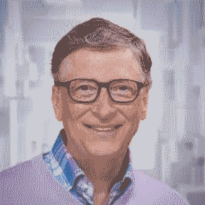
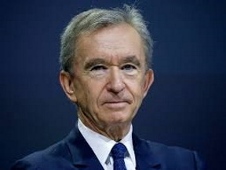
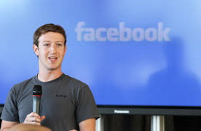
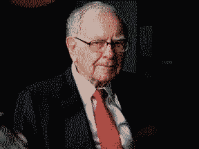
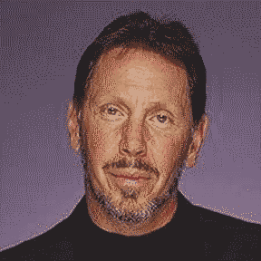
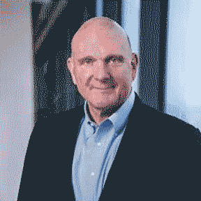
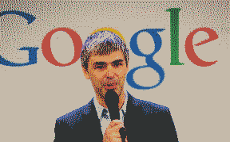
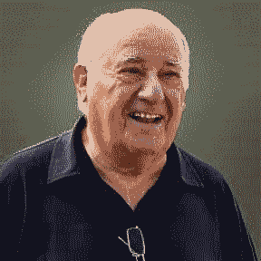
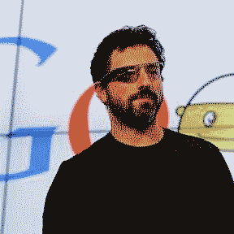

the most influential people of all time
- Jeff Bezos, $145bn The former hedge fund manager turned online book seller started Amazon in his garage in 1994. Bezos has invested heavily in space technology and also owns The Washington Post newspaper.
- Bill Gates, $106.6bn A permanent fixture at the top end of Forbes’ list for the past 20 years, the Microsoft founder has sold or given away much of his stake in the company – he owns just 1% of Microsoft – and now focuses predominantly on his philanthropic work.
- Bernard Arnault, $91.6bn Arnault is the wealthiest European on the list. The Frenchman oversees an empire of more than 60 brands including Louis Vuitton and Sephora. And he recently overtook Bill Gates to become the second richest man on the planet.
- Mark Zuckerberg, $78.6n Zuckerberg famously started Facebook in 2004 at the age of 19 and now is among the top five richest men in the world.
- Warren Buffett, $68.8bn Now in his ninth decade, the Berkshire Hathaway chief executive, known as the “Oracle of Omagh” is one of the most successful investors of all time. Like Gates he has pledged to give away more than 99% of his fortune to charity.
- Larry Ellison, $67.3bn Co-founder of software firm Oracle, Ellison stepped down as CEO in 2014 but still serves as chairman of the board and chief technology officer.
- Steve Ballmer, $66.4bn The former Microsoft CEO led the company from 2000 to 2014 after joining in 1980 as employee number 30, having dropped out of Stanford University’s MBA programme. The same year he retired from Microsoft he bought the NBA’s Los Angeles Clippers for $2bn, says Forbes.
- Larry Page, $63.3bn In 1998, Page co-founded Google with business partner Sergey Brin. He stepped down as CEO of Alphabet, Google’s parent company, in December last year but is still a board member.
- Amancio Ortega, $61.9bn Ortega stepped down as chairman of Inditex, known for its Zara brand, in 2011 but he still owns nearly 60% of its shares.
- Sergey Brin, $61bn The Google co-founder stepped down as president of Alphabet in December, although remains a board member. He spends a lot of time on Alphabet’s moonshot research lab X.









